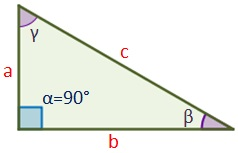
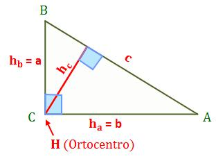
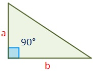

El triángulo rectángulo es un polígono de tres lados que tiene uno de sus ángulos recto (α=90º).
Los dos ángulos menores (β y γ) suman 90º.
Los elementos de un triángulo rectángulo son: los dos lados contiguos al ángulo recto, a y b (cada uno de ellos es un cateto), y el lado mayor c, opuesto al ángulo recto, que es la hipotenusa.
Hay dos tipos de triángulo rectángulo, según los dos ángulos águdos:
Las alturas del triángulo rectángulo asociadas a los catetos (a y b) son el cateto opuesto correspondiente. Por lo tanto, ha=b y hb=a. La altura associada a la hipotenusa es hc.
Las tres alturas confluyen en el ortocentro, H en el vértice C del ángulo recto.
Para calcular la altura asociada al lado c (la hipotenusa) se recurre al teorema de la altura.
La altura h (o hc) puede obtenerse conociendo los tres lados del triángulo rectángulo.
h = (a*b)/cEl triángulo rectángulo tiene un ángulo recto (90º), por lo que su altura coincide con uno de sus lados (a). Su área es la mitad del producto de los dos lados que forman el ángulo recto (catetos a y b).
Área = (b*a)/2 siendo b la base y a el lado que coincide con la altura
Links de ayuda